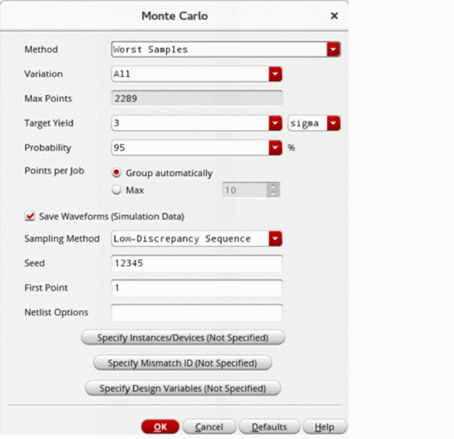

Running the Worst Sample Method
Before you run the Worst Sample method, ensure that the following environment variable is set to t:
envSetVal("maestro.monte" "showMethodWorstSamples" 'boolean t)
To create statistical corners using the Worst Sample method:
- Open your design in ADE Assembler or ADE Explorer.
- From the Run Mode drop-down list, select Monte Carlo Sampling.
-
Click the Simulation Options command.
The Monte Carlo form opens.
 - From the Method drop-down list, select Worst Samples.
- From the Variation drop-down list, select Mismatch, Process, or All.
-
The Max Points field shows the maximum number of points to be displayed.
Value for this field is automatically calculated based on the target yield or probability value. For example, it is set to2289when the probability is95%. This value changes when you change the probability. - In the Probability field, specify the probability value (confidence level). The default probability is 95%.
- Select the Save Waveform (Simulation Data) check box to save the waveform data so that it can be used later for post-processing.
- From the Sampling Method drop-down list, select Random or Low-Discrepancy Sequence.
- Click OK to close the Monte Carlo form.
- Click Run Simulation to run the simulation.
The simulation run first performs initial Monte Carlo to reorder samples and then runs the worst sample algorithm to generate the worst sample for each specification. The following run log is generated for this simulation run.
A comprehensive summary is added towards the end of the run log to show the worst samples for all the specifications together for each test.
A statistical corner is generated for each specification in the setup. These corners can be viewed in the Data View assistant and the Corner Setup form. The naming convention for these corners is Stat_seq_Worst_corner_number_params_Specification_name.
Related Topics
Return to top